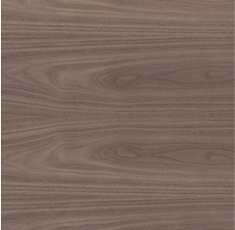

Nogal

El nogal es la madera favorita para muebles finos, interiores y culatas para armas de fuego.
La albura del nogal es blanco cremoso. mientras que el color del duramen va del cafe claro a cafe chocolate oscuro, ocasionalmente con un sombreado purpureo y nudos mas oscuros.
El nogal es una madera de construccion fuerte y robusta de densidad media, resistencia moderada a la flexion y al impacto.
Sus principales usos son muebles y gabinetes, interiores arquitectonicos, ebanisteria de alta calidad, puertas duela y tembien los paneles.
Es una madera muy resistente a la descomposicion del duramen, es una madera sumamente durable, aun en condiciones desfavorables a la descomposicion aunque el albura es suceptible al ataque de la polilla.